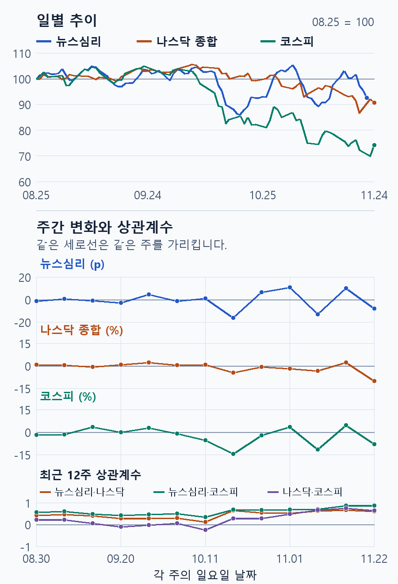
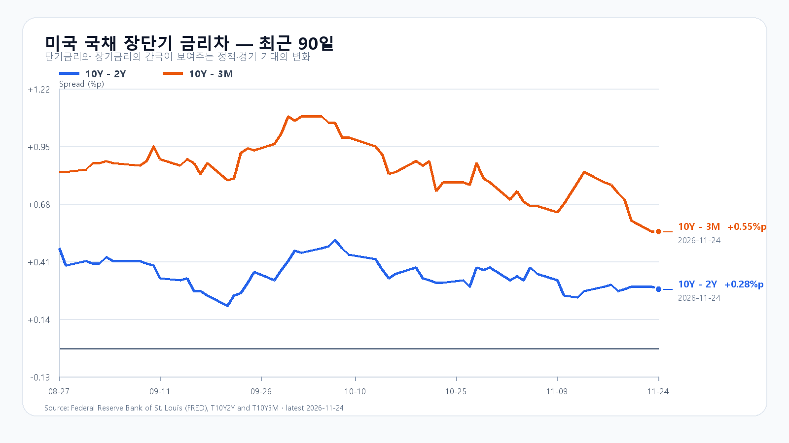

코스피가 6.32% 올라 5,006.03에 마감한 뒤, 뉴욕에서는 반도체주가 반락했다. 미국 반도체 ETF SOXX는 8.27%, 마이크론은 11.01%, 엔비디아는 5.86% 내렸다. 전날 서울 증시를 끌어올린 종목들이 오늘은 개장부터 압박을 받을 수 있다. 낙폭을 줄일 힘은 어제 돌아온 외국인 매수가 이어지는지에 달려 있다. 한국장 마감 · SOXX 시세 · 미국장 마감
미국 반도체가 밀렸고 다우는 올랐다
나스닥종합지수가 1.48% 내리는 동안 다우지수는 0.85% 올랐다. 미국 반도체주에 매도가 몰린 밤이었다. 한국시간 오전 8시 1분 무렵 시간외에서 SOXX는 정규장 종가보다 0.76%, 마이크론은 0.79% 올랐고 엔비디아는 0.24% 더 내렸다. 서울에서 반도체주가 약하게 출발하더라도 금융·자동차 등 다른 업종으로 매도가 번지는지는 개장 뒤 확인할 대목이다. 미국 지수 종가 · 마이크론 시세 · 엔비디아 시세
전날 외국인은 코스피에서 순매수로 돌아섰다. 삼성증권의 장 마감 집계에서 외국인은 삼성전자를 집중적으로 사들였고 SK하이닉스는 팔았다. 오늘 두 종목의 개장 후 첫 저점과 비차익 프로그램 매매를 함께 보면 전날 매수세가 얼마나 남았는지 가늠할 수 있다. 코스피가 전날 시가이자 저가였던 4,880.16을 밑돌면 급등 당일에 들어온 매수세도 손실 구간에 들어간다. 삼성증권 마감 시황 · 코스피 일봉
| 항목 | 값 | 원천 기준 시각 |
|---|---|---|
| KOSPI 전일 종가 | 5,006.03 | 2026-11-24T15:30:00+09:00 |
| KODEX 전일 종가 | 52,935원 | 2026-11-24T15:30:00+09:00 |
| USD/KRW 하나은행 고시 | 1,342.50원 | 2026-11-25T06:34:50+09:00 |
| NQF 최근 거래 | 26,266.00 | 2026-11-25T06:59:59+09:00 |
| ESF 최근 거래 | 7,210.75 | 2026-11-25T06:59:59+09:00 |
| BZF 최근 거래 | 88.50 | 2026-11-25T06:59:17+09:00 |
| CLF 최근 거래 | 81.69 | 2026-11-25T06:59:55+09:00 |
국내 뉴스심리와 경기선행지수
- 한국은행 뉴스심리지수 91.07 · 2026-11-22 관측 · 주간 공표 · 7일 전보다 8.02포인트 하락 출처
- 뉴스심리지수 3개월 평균 100.76 · 2026-10까지 3개월 · 일별 지수의 월평균 사용 · 한 달 전 3개월 평균보다 1.51포인트 하락 출처
- 경기선행종합지수 순환변동치 104.1 · 2026-09 기준 · 전월보다 0.1포인트 하락 출처

세 지표는 2026.08.25 기준으로 100에서 시작합니다. 뉴스심리 최신 관측치는 11.22 91.07입니다. 최신 정규장 종가는 나스닥 종합 11.24 23,733.54, 코스피 11.24 5,006.03입니다.
한 주는 월요일부터 일요일까지입니다. 뉴스심리는 일요일 지수에서 전주 일요일 지수를 뺀 값, 주가는 그 주 마지막 거래일 종가의 전주 대비 수익률을 씁니다.
각 날짜의 피어슨 상관계수는 그 주까지의 최근 12주를 같은 주끼리 짝지어 계산했습니다. 아래 표의 한 행에서 세 지표의 주간 변화와 세 쌍의 상관계수를 함께 읽을 수 있습니다.
날짜별 주간 변화와 상관계수
| 주 종료일 | 뉴스심리 변화 | 나스닥 수익률 | 코스피 수익률 | 뉴스심리·나스닥 | 뉴스심리·코스피 | 나스닥·코스피 |
|---|---|---|---|---|---|---|
| 2026.11.22 | -8.02p | -10.02% | -7.95% | +0.60 | +0.87 | +0.65 |
| 2026.11.15 | +10.04p | +2.27% | +4.56% | +0.66 | +0.86 | +0.74 |
| 2026.11.08 | -13.25p | -3.37% | -11.71% | +0.62 | +0.71 | +0.66 |
| 2026.11.01 | +10.78p | -2.00% | +3.25% | +0.53 | +0.68 | +0.49 |
| 2026.10.25 | +6.57p | -0.71% | -2.08% | +0.55 | +0.66 | +0.28 |
| 2026.10.18 | -16.46p | -4.48% | -14.46% | +0.64 | +0.68 | +0.28 |
| 2026.10.11 | +1.10p | +0.64% | -5.39% | +0.12 | +0.33 | -0.24 |
| 2026.10.04 | -1.19p | +0.45% | -1.09% | +0.29 | +0.51 | +0.06 |
| 2026.09.27 | +4.70p | +2.06% | +2.71% | +0.29 | +0.47 | -0.02 |
| 2026.09.20 | -2.79p | +0.72% | -0.23% | +0.28 | +0.42 | -0.11 |
| 2026.09.13 | -1.17p | -0.66% | +3.33% | +0.40 | +0.48 | +0.07 |
| 2026.09.06 | +0.61p | +0.40% | -1.50% | +0.45 | +0.60 | +0.23 |
| 2026.08.30 | -1.23p | +0.85% | -1.79% | +0.43 | +0.57 | +0.23 |
델은 AI 서버 매출 전망을 높였다
미국 장 마감 뒤 델은 회계연도 3분기 AI 서버 매출이 220억 달러로 1년 전보다 291% 늘었다고 발표했다. 연간 AI 서버 매출 전망도 740억 달러에서 780억 달러로 올렸다. 같은 분기 영업현금흐름은 44억 5,900만 달러였다. 서버 출하 확대는 HBM과 서버용 메모리 수요를 뒷받침한다. 범용 메모리 쪽에서는 24일 DDR5 16Gb 현물이 0.22% 오르고 DDR4 16Gb가 0.32% 내렸다. 트렌드포스는 중국 클라우드 업체의 기업용 SSD 주문 감소를 근거로 내년 1분기 낸드 계약가격이 최대 5% 하락할 수 있다고 봤다. 델 실적 · DRAM 현물 · 낸드 전망
KODEX 레버리지, 51,585원에서 전날 매수세를 시험한다
KODEX 레버리지는 전날 52,935원에 마감했다. 전날 저가인 51,585원이 첫 지지선이다. 52,935원을 회복해 지지하면 전날 고가인 54,360원이 다음 저항이다. 코스피 종가의 기본 범위는 4,850~5,020이다. 5,020을 넘고 외국인과 프로그램이 함께 순매수하면 5,150까지 열어 둔다. 4,850을 밑돌고 두 수급이 함께 순매도면 4,690까지 밀릴 수 있다. KODEX 일봉 · 코스피·KODEX 투자전략
미국 10년물 금리는 4.91%로 1bp 내렸다. 한국시간 오늘 밤 10시 30분에는 미국 10월 개인소비지출 물가와 3분기 GDP 잠정치가 나온다. 내일은 한국은행 금융통화위원회가 열린다. 미 재무부 · 미국 경제분석국 · 한국은행
